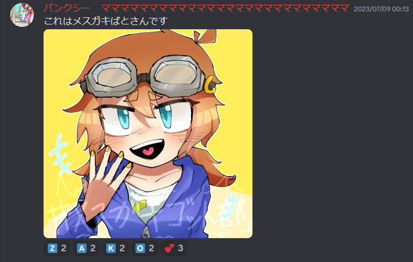

アフィカス - ゴットばとたい
ゴットばとたいはねりうむさんの子供なのか？！調べてみた！！
ゴットばとたいさんは、Twitter(現:X)で10回以上も万バズをされているそうです。
ゴットばとたいさんのツイートで一番有名なものはこちらです。
このツイートは1.7万いいねでとてもバズっていますね！
ねりうむさん(以下、バンクシーと言います。)は、とても絵が上手い人でゴットばとたいさんの絵をよく書いています！
ゴット界隈でのバンクシーの絵で有名なものはこちらです！

とても絵が上手いですね！
この絵は「ゴットを感じる鯖」で見ることができます！！